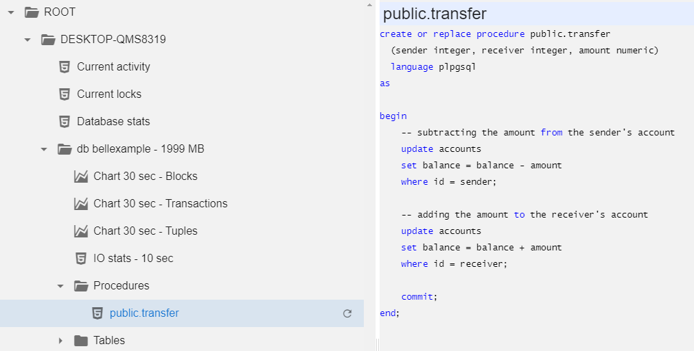
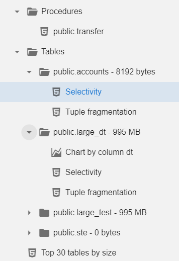
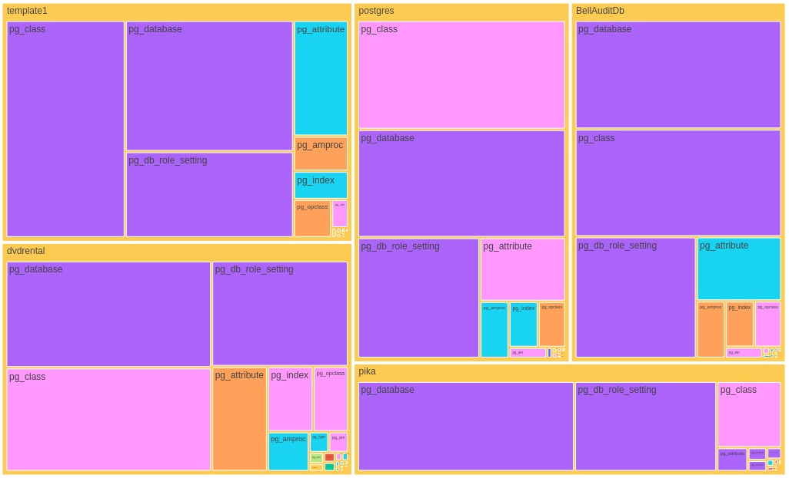

Postgres
Download the module and modify ROOT_PGstub.ps1 - out of the box it lists just the current server. You will probably
want to add more from one of the inventories. When connection strings
contain passwords, it is recommended to write them in the following
format: ###secretname###, and the value for the secret is
stored in config.js file and is not sent to a client (and can not be
debugged using F12-console). Contribute more on Github.
Powershell uses ODBC to connect to Postgres, so you need to have psqlodbc_ver-x64.zip installed on a server.
At the top level, you have a few server-wide reports and a list of databases with their sizes.
At a database level, you get several performance charts (you have to wait 30 seconds or 10 seconds for each, the module builds charts by calculating deltas of the increasing cumulative values) and the "biggest tables" report.
You can click on any stored procedure to inspect the source code:
Finally, for every table you can get fragmentation and selectivity reports, and for tables with datetime columns distribution of the values by date (number of records per date):
The index coverage report lists all columns, covered by any index at least once. Leading column in an index is marked with '1', second with '2' etc. You can easily spot over-indexing and bad indexing.

NEW: TreeMap of table and index sizes in every database and on
server at whole.
Color represents:
Green - table data
Yellow - indexes
NEW: TreeMap of table hits in every database and on server at whole.
Color represents cache hits ratio
